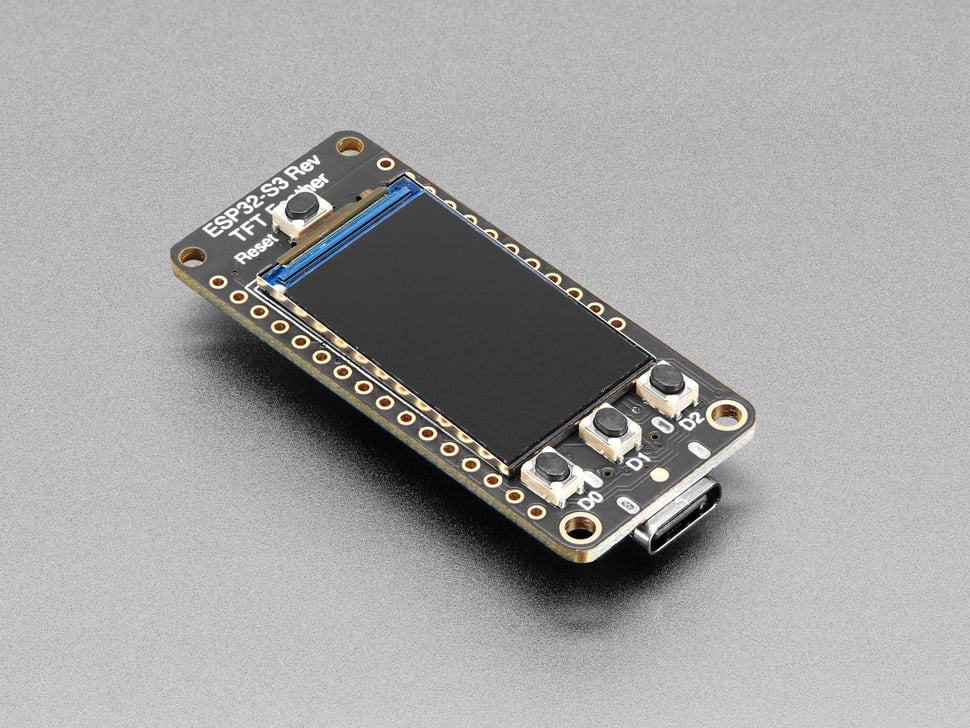
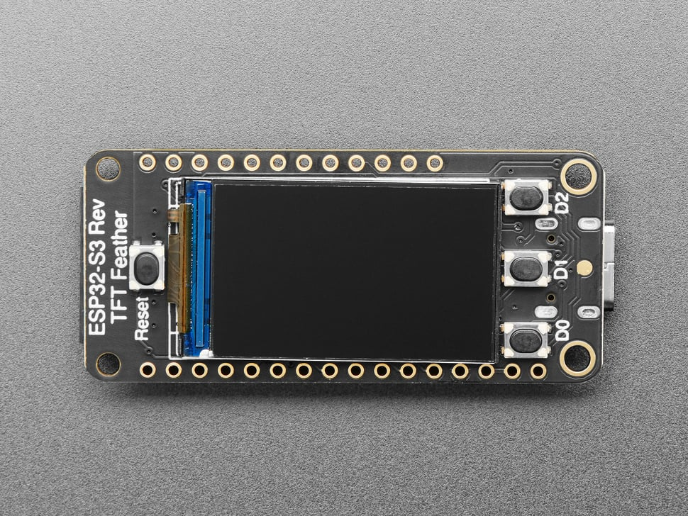
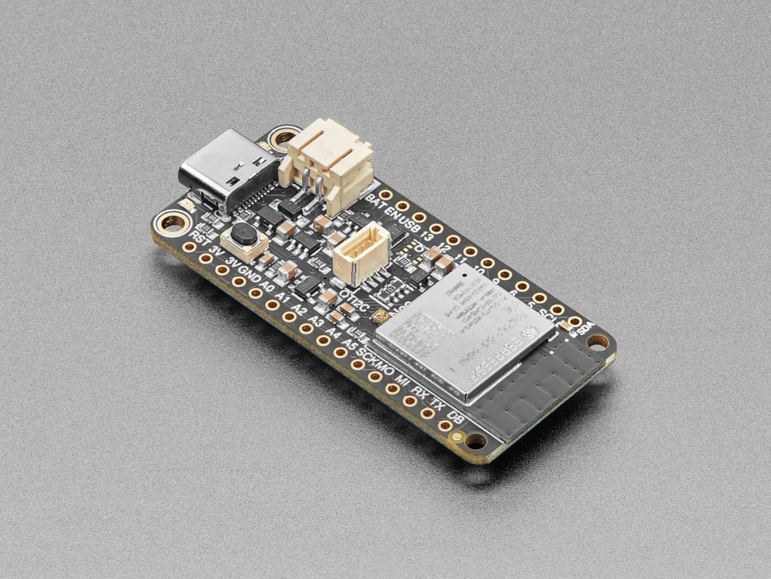
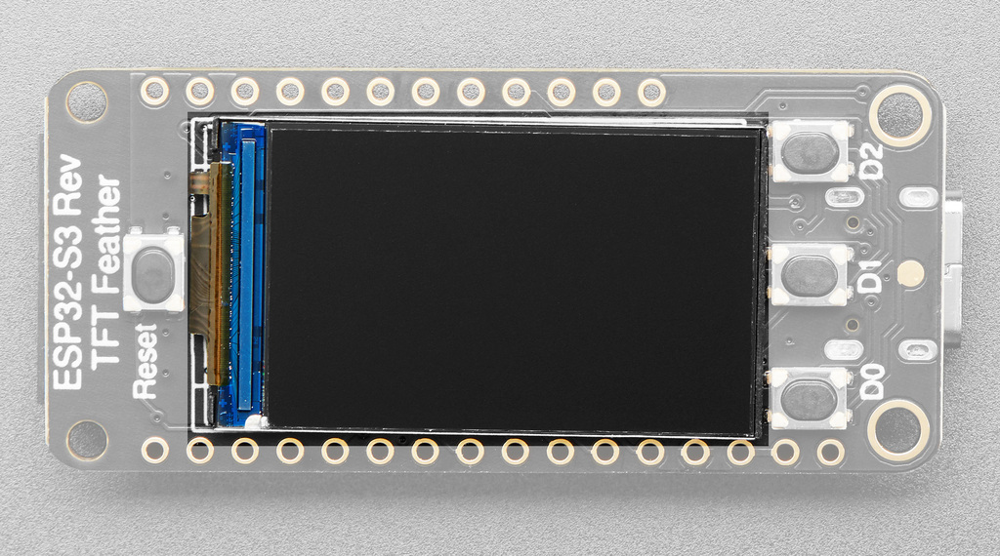

The software. Plug it in and it joins Wi-Fi, calls OpenRouter over HTTPS, and paints today / week / month spend plus a green→orange→red budget bar — refreshing itself every minute, forever.
The route
Three short chapters
Each one is crisp on purpose — enough to be dangerous, with links out to the official docs when you want the deep end.

Meet the board
The Reverse TFT Feather, subsystem by subsystem: the ESP32-S3 chip, the screen, the buttons, the pins — and why it's called “Reverse”.
read →
Python on bare metal
Flash MicroPython, say hello over the REPL, and learn the mental-model shifts and the edit → deploy loop that make board work feel like normal Python.
read →
Tour the app
How ~800 lines of Python become an always-on spend monitor: the screens, the architecture, the main loop — and how to remix it into your own gadget.
read →Pack list
What you'll need
The board
Adafruit ESP32-S3 Reverse TFT Feather (product #5691, ~$25). Display, buttons and Wi-Fi are all built in — no soldering, no wiring.
A USB-C data cable
Many USB-C cables are charge-only. You need one that carries data — it's the #1 “my board doesn't show up” cause.
2.4 GHz Wi-Fi
The ESP32-S3 has no 5 GHz radio. Most routers broadcast both; you just need the 2.4 GHz network's name and password.
An OpenRouter key
A normal (read-only is fine) inference API key from openrouter.ai/settings/keys. The dash only ever reads usage.
uv
uv installs the two command-line tools you'll
use (esptool, mpremote) and the host-side test toolchain.
Working Python
No electronics experience required. If you can read a while loop and a
dict, you're qualified.